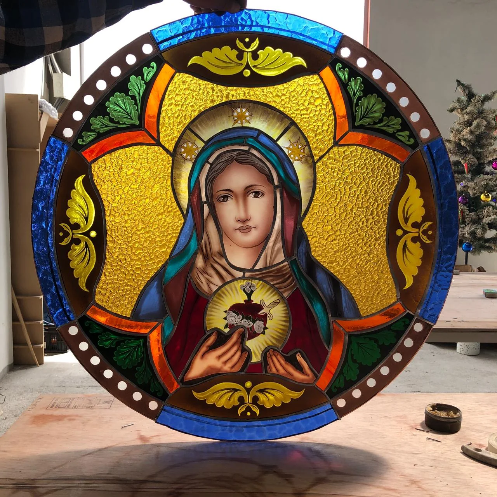
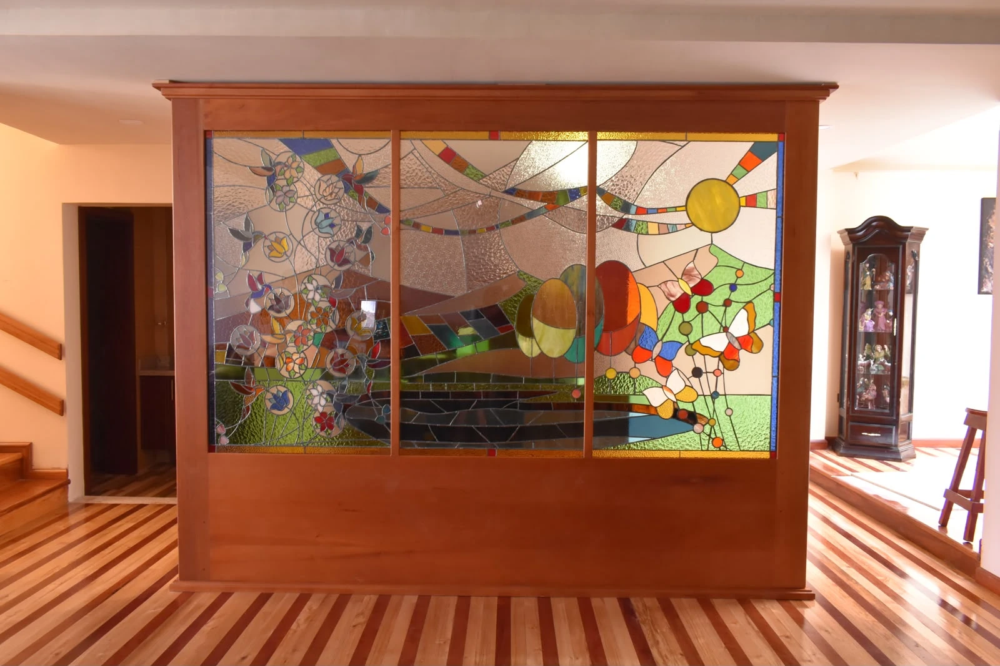
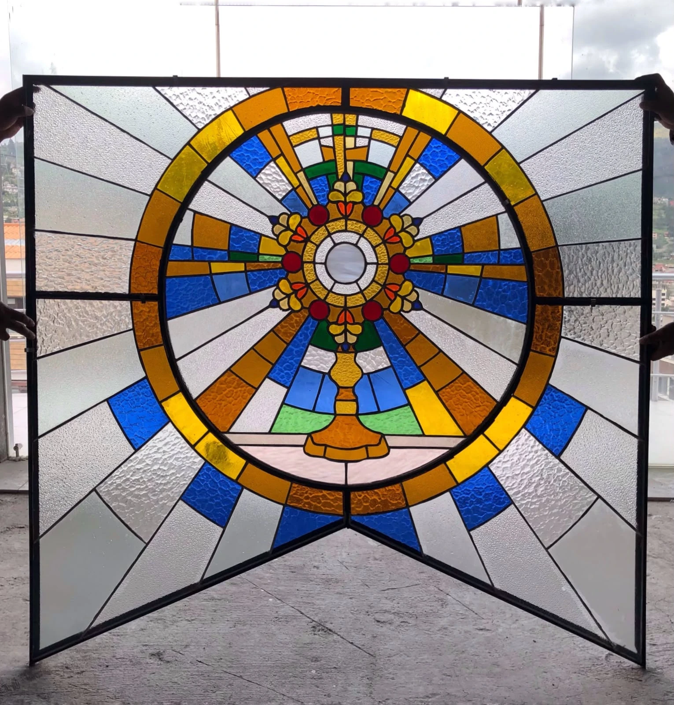
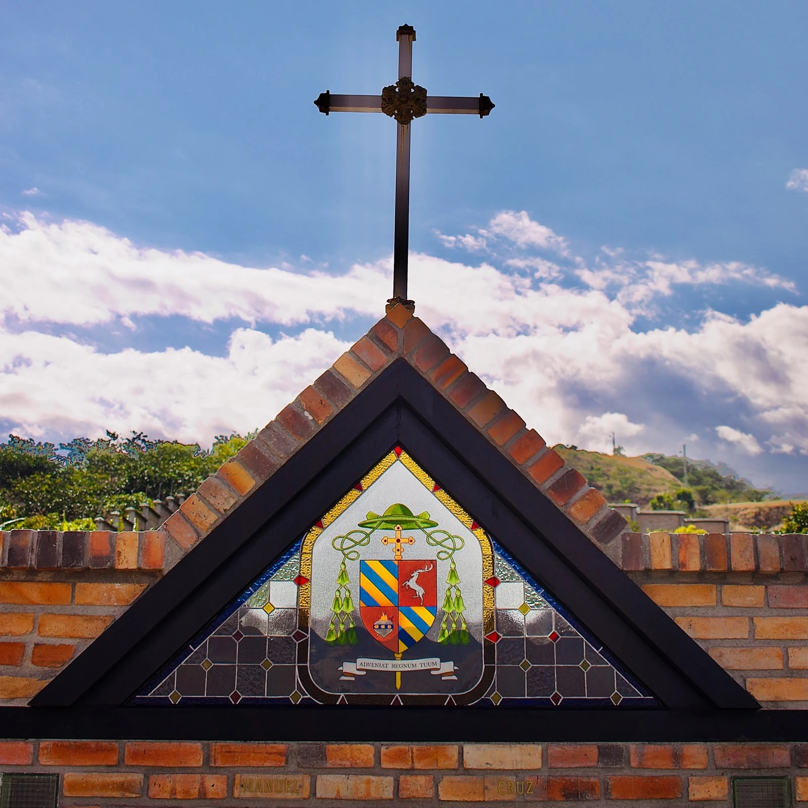
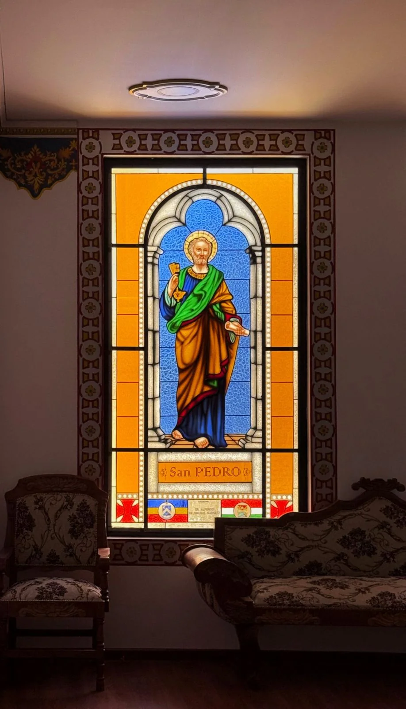
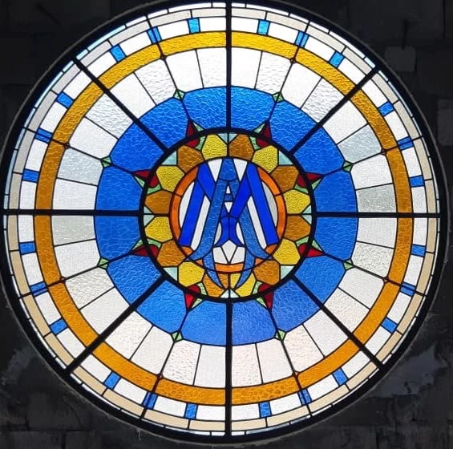

Diseño
Conceptualización, composición e interpretación del espacio arquitectónico.
MAKI — TALLER / CUENCA, ECUADOR
Diseño, elaboración, instalación y restauración de vitrales artísticos.
Explorar nuestras obras ↗01 / EL TALLER
En MAKI – Taller concebimos el vidrio como un medio de expresión artística capaz de transformar la luz y enriquecer los espacios arquitectónicos.
Desarrollamos obras personalizadas que integran diseño, tradición artesanal y sensibilidad arquitectónica, desde la idea inicial hasta su instalación.
MAKI — Arte en vidrio
OFICIO Y DETALLE
Cada composición nace del diálogo entre la imagen, el vidrio y la arquitectura que la recibe.
02 / PORTAFOLIO
Una selección de intervenciones de MAKI – Taller. Explore cada proyecto para conocer las obras y sus fotografías.

Ver proyecto ↗Mampara de madera y vitral artístico

Ver proyecto ↗Parroquia Manuel de J. Calle

Ver proyecto ↗Vitral triangular integrado en la arquitectura

Ver proyecto ↗Curia Diocesana de Azogues
 Ver proyecto ↗
Ver proyecto ↗Seis sacramentos y dos imágenes devocionales
 Ver proyecto ↗
Ver proyecto ↗Vitrales en cúpulas
 Ver proyecto ↗
Ver proyecto ↗Vitrales de arte sacro

Ver proyecto ↗Vitrales de arte sacro
Portafolio en desarrollo. Se incorporarán más proyectos y fotografías progresivamente.
03 / NUESTRO OFICIO
Una práctica artesanal que une la sensibilidad artística con el rigor técnico de cada proyecto.
Conceptualización, composición e interpretación del espacio arquitectónico.
Selección de vidrio, corte, pintura artística y ensamblaje artesanal.
Integración de la obra en su contexto arquitectónico.
Recuperación y conservación de vitrales existentes.
04 / CONTACTO
MAKI – Taller · Cuenca, Ecuador
Para consultas y nuevos proyectos, solicite nuestros datos de contacto al representante que le compartió este portafolio.
© MAKI – Taller. Fotografías y obras de autoría del taller. Todos los derechos reservados.